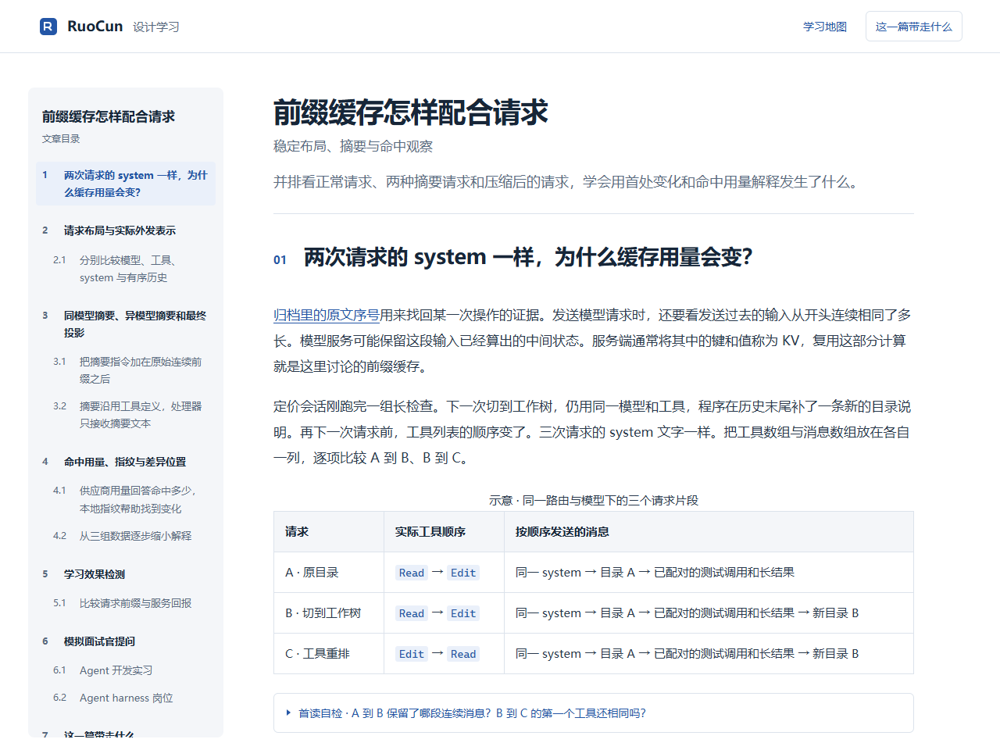
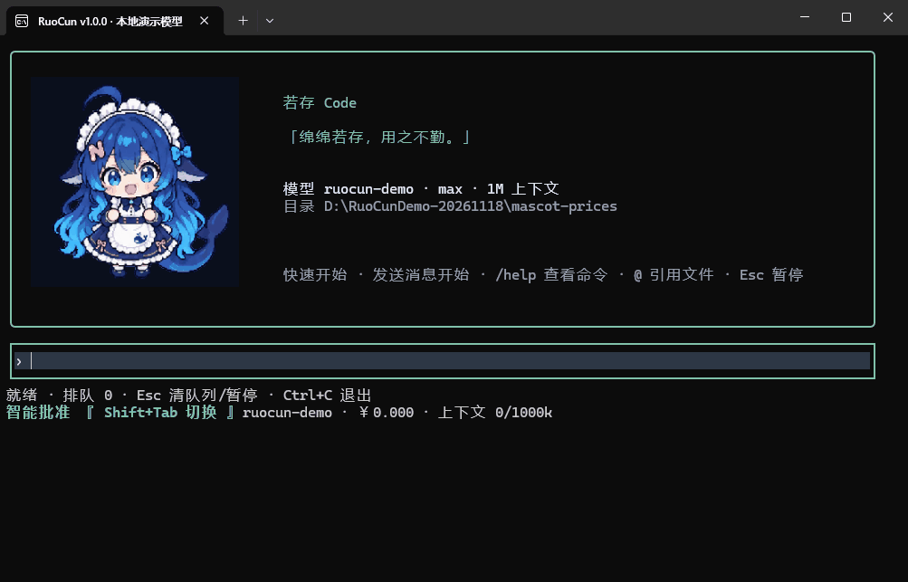
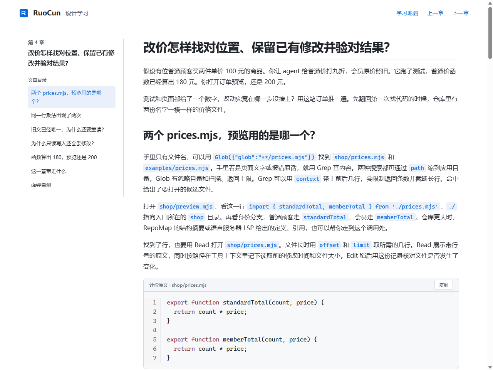
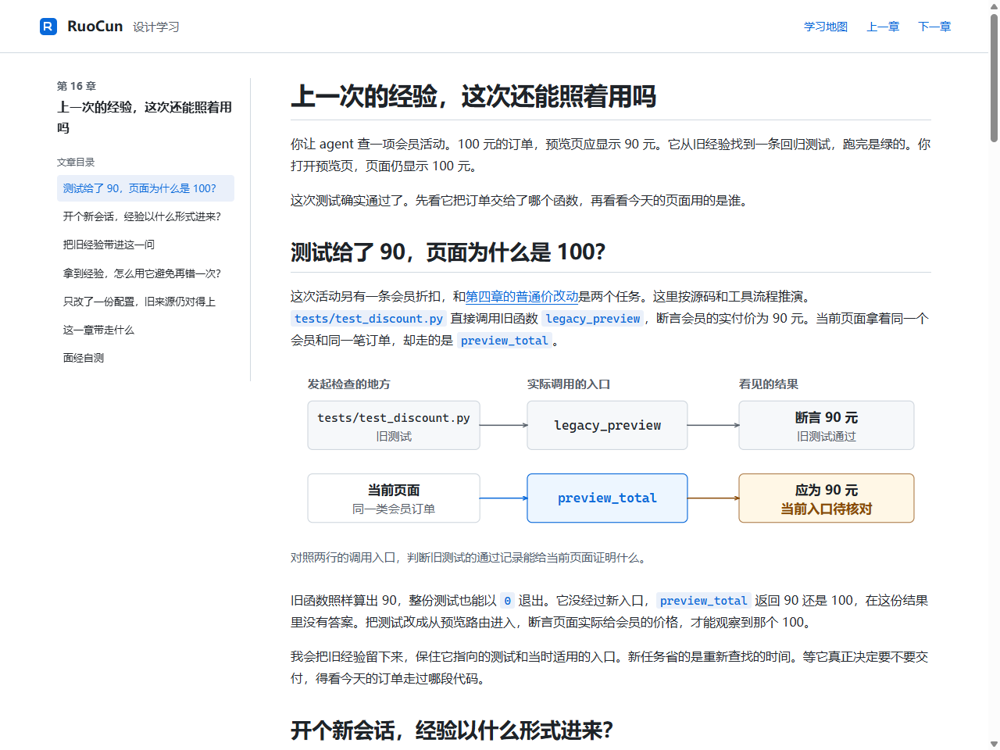
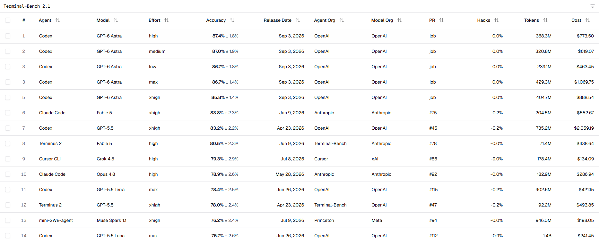

第 16 章 · 前缀缓存怎样配合请求
两次请求的 system 一样，为什么命中量会变？这一章把原目录、切到工作树、工具重排三次请求并排放，再沿目录追到摘要、压缩、用量和动手练习。

Coding Agent 工程参考实现
若存是一套可运行的终端编码智能体，为已经接触过 Agent 或 Harness、想读懂一套完整工程的开发者而做。
配套的 22 章中文源码课程沿着一次编码任务展开。你可以先跑通一个任务，再动手改动其中一环，用任务结果检验自己的判断。

两次请求的 system 一样，为什么命中量会变？这一章把原目录、切到工作树、工具重排三次请求并排放，再沿目录追到摘要、压缩、用量和动手练习。



在 Terminal-Bench 2.1 项目自测中，若存通过 71 / 89 项任务（79.78%）。与官方榜的 Codex + GPT‑6 Astra（xhigh，85.8%）相差约 6 个百分点，按 89 题折算约 5 题。
若存的数字来自历史制品的逐题汇总，包含补判与复测。官方榜单分数为多次试验的汇总。 Harbor 官方榜单
若存已确认用量按低峰价估算为 ¥31.07，按高峰价为 ¥62.15，分别约为该 Codex 榜单条目总费用的 0.52% 和 1.04%。两边的模型和试次数不同。
| 任务 ID | 结果 | 裁判通过项 |
|---|
若存每题保留一个有效成绩，5 次请求缺用量。Codex 榜单条目按多次试验统计，总费用为 $888.54。按 2026 年 11 月 18 日中间价 1 美元兑 6.7118 元折算为 ¥5,963.70。 人民币汇率中间价

调试跑了几十轮，构建日志挤满了上下文。若存把工具定义、消息和输出余量一起算进预算，先裁剪很长的工具输出，还不够才摘要较早的对话。生成摘要时保留近期消息，工具调用和对应结果按组处理。
新视图确认保存后才切换，压缩失败时保留原视图。想核对「会员价测试失败」的细节，可按归档 ID 用 ArchiveRead 回查 SQLite 中的原始测试输出。压缩策略参考 DeepSeek Harness。
上次遇到「空页仍有下一页游标」的问题，可以把继续翻页的条件、做法和验证用例一起记下来。下次碰到相似的分页问题，模型先核对当前接口约定，再跑相应用例确认。
普通 CLI 默认加载启动快照，自动学习关闭。--memory-strategy task 可补充与任务相关的旧经验，--memory-learning controlled 可从纠错和验证结果中提炼新经验。